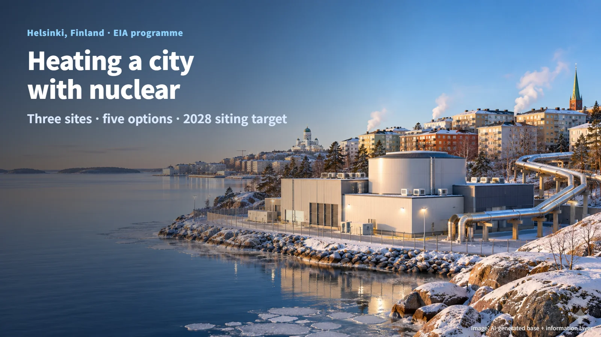
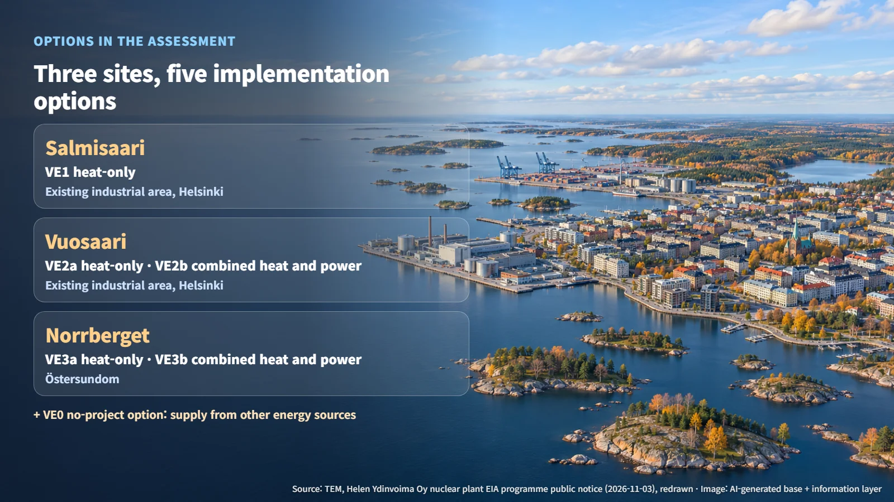
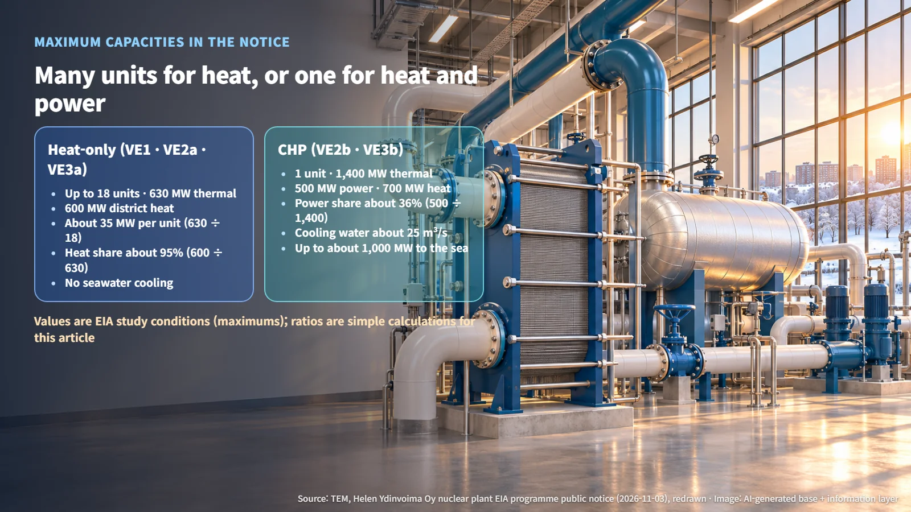
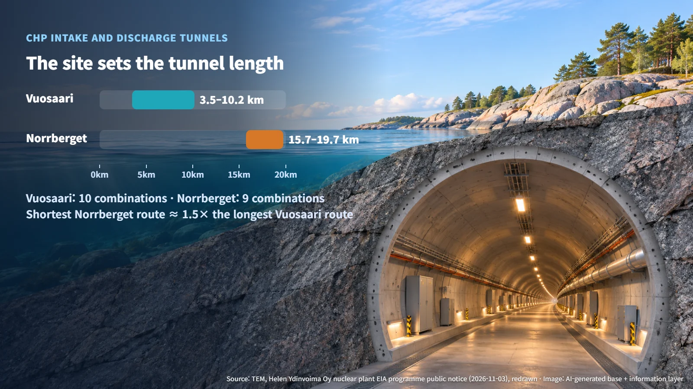

Finland · District Heating SMR
Heat Only, or Heat and Power? The Five Options in Helen's Helsinki SMR Environmental Assessment
Helen has opened public consultation on an EIA programme that compares heat-only and combined heat and power SMR options at three Helsinki-area sites.
Most people picture a nuclear plant as a large station that sends electricity to the grid. In Helsinki, Finland, the question on the table is different: could small modular reactors (SMRs, reactors designed at a smaller scale so that several units can be built in stages) keep the city warm in winter? Helen Ydinvoima Oy has submitted the environmental impact assessment (EIA, known in Finnish as YVA) programme for the project, and a public consultation runs from November 3, 2026 to January 4, 2027. Following the numbers is the clearest way to see what the assessment will compare.

Heating a City with Nuclear: Three Sites, Five Options
The project would use reactor heat for district heating, a system that warms water at a central plant and pipes it to many buildings across the city. The candidate sites are Salmisaari and Vuosaari, two existing industrial areas in Helsinki, and Norrberget in Östersundom.
The public notice lists the options as heat-only at Salmisaari (VE1), heat-only and combined heat and power at Vuosaari (VE2a and VE2b), and heat-only and combined heat and power at Norrberget (VE3a and VE3b). That makes heat-only options at three sites and combined heat and power options at two sites, five implementation options in total. The assessment also covers a no-project option (VE0), in which the same needs are met by other energy sources without a nuclear plant.

What has been published now is the first stage of the EIA: the programme, a plan that sets out which impacts will be studied and by which methods. The coordinating authority is the Finnish Ministry of Economic Affairs and Employment (TEM), and the Finnish Environment Institute (SYKE) handles the international consultation. Because sites and heat-supply modes sit side by side in one comparison, the list of things to investigate changes with where an SMR is built and how it supplies heat.
Many Small Reactors or One Large One
The heat-only options are described as up to 18 units with a total reactor thermal output of 630 MW and 600 MW of district heat. Dividing 630 MW by 18 units (630 ÷ 18) works out to about 35 MW of thermal output per unit, based on the maximum of 18 units. District heat of 600 MW divided by thermal output of 630 MW (600 ÷ 630) works out to about 95%, so nearly all of the reactor heat goes into heating. The project description presents the heat-only configuration as one that operates without seawater cooling.
The combined heat and power options use one large reactor with 1,400 MW of thermal output, 500 MW of electricity and 700 MW of district heat. Electricity divided by thermal output (500 ÷ 1,400) works out to about 36%, and 1,400 MW of thermal output is about 2.2 times the 630 MW total of the heat-only options. Turning heat into electricity leaves surplus heat behind, and in the combined option part of that heat is released to the sea.
Adding 500 MW of electricity and 700 MW of district heat gives 1,200 MW, and adding the maximum of about 1,000 MW released to the sea takes the total past 1,400 MW. The reason is that the assessment uses the maximum value of each item as its study condition. Material that reconciles all three values into a single operating point has not been published. At its core, the comparison asks a simple question: should Helsinki use several small reactors for heat alone, or one large reactor that produces both electricity and heat?

Heat to the Sea and Tunnel Length Set the Sites Apart
The combined heat and power options need about 25 m³/s of cooling water, with up to about 1,000 MW of heat released to the water body. Drawing in seawater and returning warmed water requires intake and discharge tunnels. According to the notice, Vuosaari (VE2b) has 10 route combinations ranging from 3.5 to 10.2 km, while Norrberget (VE3b) has 9 combinations ranging from 15.7 to 19.7 km.
The shortest Norrberget combination, 15.7 km, is longer than the longest Vuosaari combination, 10.2 km. Dividing one by the other (15.7 ÷ 10.2) works out to about 1.5 times. For the same single-unit combined heat and power plant, choosing a site also means choosing the scale of the connecting infrastructure. For the heat-only options, the points of comparison are each site's district heating connection and power supply.

The project description plans to assess the effects of cooling water on water temperature, water quality and marine life using dispersion modelling, baseline data, and aquatic and ecological surveys. Handling and interim storage of spent fuel are part of this assessment, while final disposal is covered in a separate procedure. The operating licence for Posiva's final repository in Finland, which we covered earlier, is an example of that separate procedure.
After the Programme: The Assessment Report and a 2028 Siting Target
An EIA moves from the programme to an assessment report containing the study results, and then to review by the authorities and a reasoned conclusion. After this consultation, TEM will issue its statement on the programme, and the developer will prepare the assessment report on that basis.
The sources describe the report's timing in slightly different terms. Helen's EIA information page says the report will be prepared in 2027, while the November 3 press release and a November 5 explainer say it will be completed in 2028. The target for a possible siting decision is also 2028. According to Helen's November 5 article, the technology, exact size and site will be decided later through design and assessment work.
The EIA results will feed into later design and permitting, and the City of Helsinki's land-use planning and the safety assessment by the Radiation and Nuclear Safety Authority (STUK) will lead into the construction licence decision. The next dates on the calendar are a public information event at Helsinki's Oodi library on November 16 and local resident events on November 19, 24 and 26. Step by step, through cooling water, tunnels and residents' feedback, the picture of reactors heating a city through its winters is taking shape.